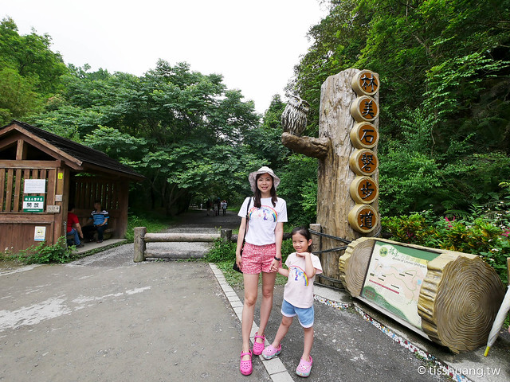
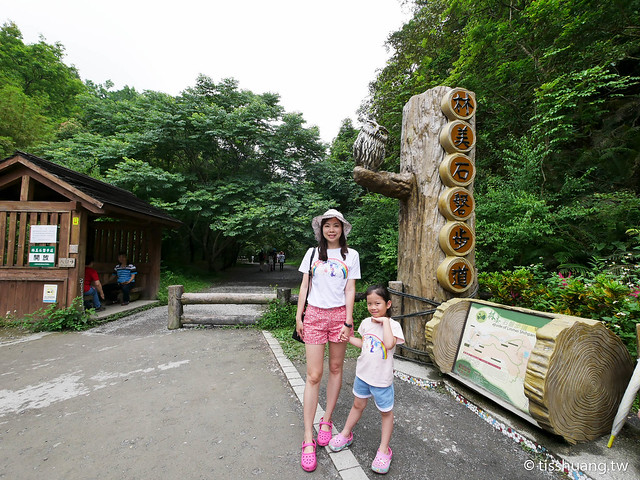

景點介紹
林美石磐步道的名稱是由『林美』、『石磐』這兩個名字所組成的。『林美』是指礁溪鄉林美村，本來為林尾村，後來才改為林美村。而『石磐』指的就是石磐瀑布。
石磐瀑布的上方有一塊堅硬的四稜砂岩，大石如盤，所以瀑布取名為『石磐』。稻草捲心酥打卡照、吃跟臉一樣大的粉圓冰、玩憤怒鳥彈弓、哆啦A夢空氣砲晚上再和巨大月兔相見歡、看百年河道燈節
林美石磐步道的名稱是由『林美』、『石磐』這兩個名字所組成的。『林美』是指礁溪鄉林美村，本來為林尾村，後來才改為林美村。而『石磐』指的就是石磐瀑布。
石磐瀑布的上方有一塊堅硬的四稜砂岩，大石如盤，所以瀑布取名為『石磐』。稻草捲心酥打卡照、吃跟臉一樣大的粉圓冰、玩憤怒鳥彈弓、哆啦A夢空氣砲晚上再和巨大月兔相見歡、看百年河道燈節
